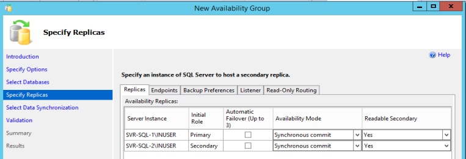
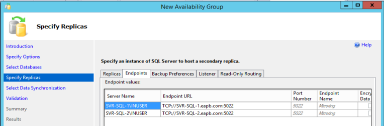
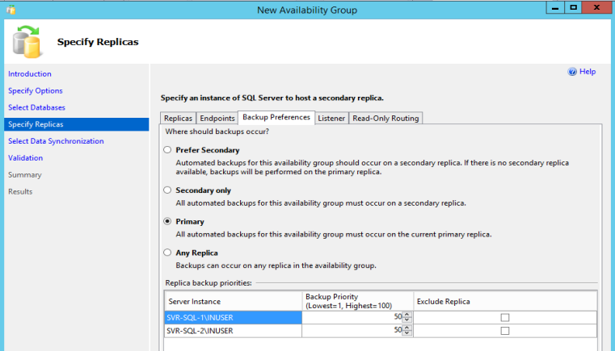
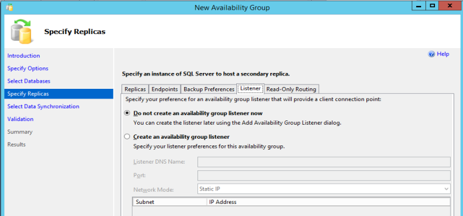
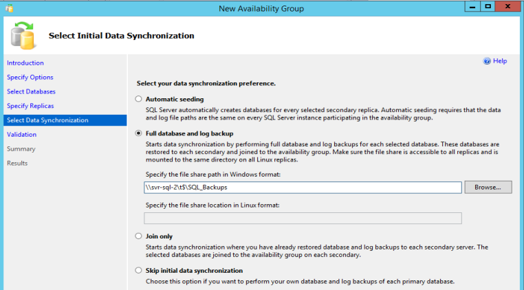

Configuring Always On AG
- Initialize New Availability Group Wizard in the Primary Replica.
- Specify Avaialability Group Name - Specify an AG name.
- Select databases - Select user databases for the availability group.
- Specify Replica
- Replica - Specify an instance of SQL Server to host a secondary replica.

- Endpoints - It is recommended to use a domain account for endpoints.

- Backup Preference - Specify back-up preference. If you want to perform backups on secondary databases, you must create a backup job script that takes the automated backup preference into account. Create a script for each database in the AG on every server instance that hosts an availability replica for the AG.

- Listener - Choose to create the listener later. Setting up AG is the priority and troubleshooting can become easier.

- Select Initial Data Synchronization - Below are the best practies options:
- Join only - Choose this step if database was restored manually on the secondary replica.
- Automatic Seeding - Choose this option to automate restoration.

- Finish the wizard.

- Right-click on the newly created AG and choose Add Listener.
- Configure Listener name, Port, Network Mode, and IP address.